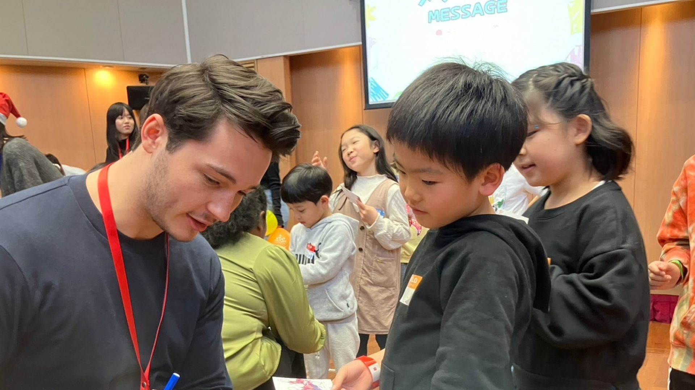

OUR STRENGTHS
５つの強み
ナタデココの５つの強みをご紹介します。

01
多彩な外国人ネットワーク
ナタデココは世界各国にルーツを持つ外国人メンバーと幅広いネットワークを築いています。多様な国籍・文化背景を持つ人々と直接つながることで、子どもたちに本物の国際交流体験を届けることができます。
45か国以上
の国と地域のメンバー
300人以上
の外国人メンバーが参加
02
豊富な開催実績
これまで数多くの学校・地域イベントで国際交流プログラムを実施してきました。豊富な現場経験から得た知見をもとに、年齢や目的に合わせた最適なプログラムを提供します。
100以上
のプログラム実施
5000人以上
の参加者
03
専門性の高い運営メンバー
教育・国際関係・語学など各分野の専門的な知識と経験を持つメンバーが運営に携わっています。子どもたちの学びを深める質の高いプログラム設計と丁寧なサポートが強みです。
04
NPOならではの低価格
営利を目的としないNPO法人だからこそ、質の高いプログラムをリーズナブルな価格でご提供できます。経済的な理由で国際交流の機会を諦めることなく、すべての子どもたちに体験を届けます。
✓
無料教材提供あり
✓
助成金利用の可能性あり
05
最新の学術研究に基づくプログラム
異文化理解教育や子どもの発達に関する最新の学術研究を取り入れたプログラムを設計しています。感情や好奇心に働きかける体験型の学びで、子どもたちの心に深く残る国際交流を実現します。
✓
定量的・定性的評価を実施
✓
外部の専門家との連携